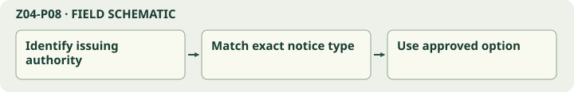

Z04-P08 · Water
Read the exact water advisory
Distinguish a boil-water notice from more restrictive notices.
When it applies · A public drinking-water advisory from a utility or public health agency.
Equipment · Current notice, approved alternate water and a way to check amendments.

Actions
- Identify the affected area and the exact type of notice. Follow instructions for drinking, food preparation, hygiene and other uses.[W07]
- Under boil-water instructions, use bottled or properly boiled water for the activities the notice lists. Under do-not-drink instructions use a permitted alternate supply for ingestion.[W07]
- Follow a do-not-use restriction for all tap uses unless authorities explicitly give a limited exception. Recheck the notice before resuming normal use.[W07]
Verify · Record issuing authority, address coverage, notice type and when the last update was obtained.[W07, ED]
Stop or change course · Do not boil your way around a chemical or do-not-use restriction.[W01, W07]
Evidence and editorial notes
- W01 · CDC · How to Make Water Safe in an Emergency
- Water with fuel or toxic chemicals in it · Suspected fuel, toxic chemicals or radioactive contamination
Use a different safe supply. Standard boiling and microbial disinfection do not make this water safe.
Primary source · checked 2026-11-24 - W07 · CDC · Drinking Water Advisories: An Overview
- Boil water; Do not drink; Do not use · Public-water system advisories
The notice determines safe activities. Use another source for do-not-drink notices. Do not use tap water for any purpose under a do-not-use notice unless authorities direct otherwise.
Primary source · checked 2026-11-24
Source lineage · CDC public drinking-water advisories; new manuscript.